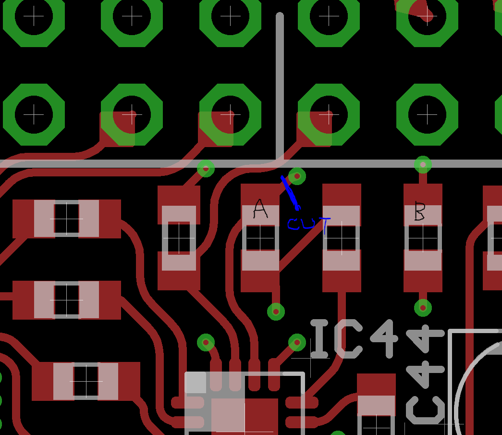

So apparently IC4 (the line output driver) broke down due to a voltage spike. This causes IC3 (just behind the line out socket) to overheat (be careful not to burn your finger when you check this!), dropping the analog supply voltage and then the audio chip would not function anymore (but that seems not to be the case on your board).
This mod would remove power to IC4 and remove the DC bias from the headphone out and couple that into the line out socket:
step 1 : cut the power to IC4

step 2 : cut three tracks on the bottom side.
(blue are copper tracks on the bottom side, red are copper tracks on the top side)
step 3 : connect one wire and two capacitors:
For the capacitors I'd suggest 10 microfarad, 16V electrolytic types. More voltage rating does not hurt. 22uF or 47uF would also be good values, it only makes a difference for low-impedance loads.
step 4 : add two resistors to bias the capacitors properly
I suggest 10kiloOhm resistors, but anything between 2.2kOhm to 22kOhm would do the job fine.
This mod bypasses the ground loop break circuit. Ground loop noises are most likely when you power Axoloti Core by USB from the same PC that is also involved in the audio path somehow (like soundcard to the same mixerdesk...).
BTW: the 'S', 'T' and 'R' markings mean sleeve, tip and ring. The top row goes straight to the headphone, line-out and line-in jacks, the bottom row connects to the circuitry. This is to allow circuit hacks, like re-purposing the 1/4" jacks to footswitch or footpedal inputs, breaking out to dual mono jack inputs and outputs, or adding a relais for true bypass...

 )
) i use headphone out with
i use headphone out with